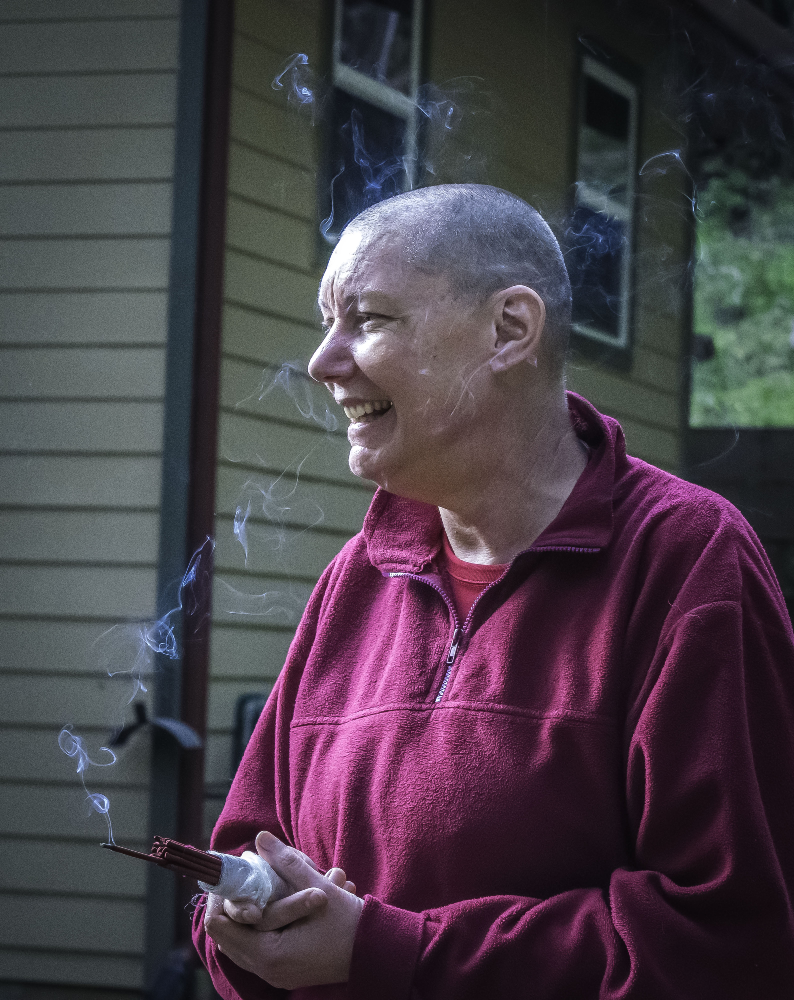
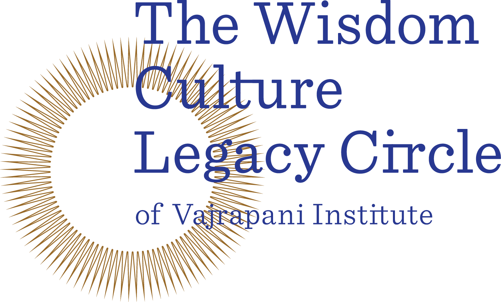
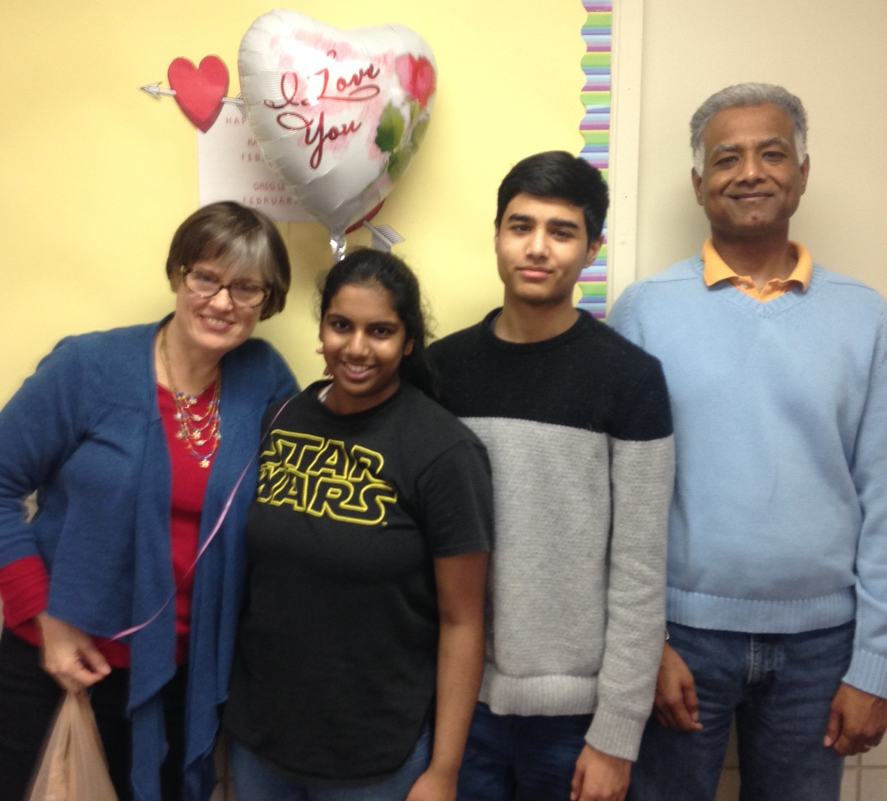

DEAR FRIENDS, DEAR SUPPORTERS,
We appreciate your support. You’re our partner in helping people build bridges of true connection into the heart of their Buddha Nature. We’re excited to show you what your support makes possible. His Holiness the Dalai Lama has been a tireless advocate of building bridges. He brings together multitudes of arenas, encompassing of Tibetan Buddhism, interfaith, Ecumenical Buddhism, secular spirituality and science. We’ve been following in his footsteps by offering an ever widening range of retreats to support a variety of needs. Join me on this journey through 2015.
This is where our journey will take us:
- The vision of our dynamic new resident teacher: Venerable Tenzin Chogkyi
- A new umbrella brand, Wise Heart, to support the success of our Youth Programs
- An introduction to our next building project: The Prayer Wheel
- An introduction to a stellar board of directors
- An overview of our finances
- Building a Legacy Circle for future generations

-Fabienne Pradelle, Executive Director

In 2015, Venerable Tenzin Chogkyi returned to Vajrapani Institute this time as our resident teacher - her passion for translating the dharma to a wide range of audiences makes her an ideal partner.
Planting the Seeds of Enlightenment
By Venerable Tenzin Chogkyi

Just over a year ago, when Gendun Drubpa Buddhist Center in Canada requested me to continue as resident teacher as my initial three-year commitment was finishing, Lama Zopa Rinpoche decided that, instead of that option or any of the others available to me at the time, moving to Vajrapani Institute as resident teacher was the most beneficial. At the time, I was a little surprised, as there are so many teachers in the Bay Area and I was used to being placed in FPMT centers in remote areas with no other access to Dharma teachings. But as I discussed the vision of my tenure at Vajrapani Institute with Fabienne, Rinpoche’s decision began to make sense.
This is my third time at Vajrapani Institute. I first came to the land in April of 1992 in the capacity of co-director, and again in 2009 as resident teacher before transitioning to touring teacher for the FPMT for a number of years. This time, not only is my vision quite different than it has been, but I feel the vision of Vajrapani has also transformed, and it feels like a great match.
When I first started teaching, it was just after emerging from many years of long retreat. At that point, I was excited to present the very traditional Buddhist teachings – “Enlightenment or bust!” In the intervening years, as I gain more experience as a teacher, I realized that anything I can possibly teach someone that will help them to suffer less is “Good enough, dear,” as Lama Yeshe would say.
Most students these days don’t come to our centers to learn the path to enlightenment. Most come because they are in emotional pain and turmoil, or can’t seem to find happiness wherever they look, or just feel a deep sense of meaninglessness about their lives that nothing seems to assuage. In presenting beginners’ programs, such as introductory meditation courses, and secular programs, like the Cultivating Emotional Balance program, I’ve seen people’s minds (and faces!) transform as they learn tools for helping them deal with their out-of-control emotions, start to investigate strategies for making their lives more meaningful, and develop their compassion and loving-kindness. And even, sometimes, awaken a glimmering of an interest in the higher goals of Buddhism, such as liberation and enlightenment!
I see the courses that Vajrapani Institute is beginning to develop and offer on a regular basis, such as the Compassionate Conversations interfaith retreat, Cultivating Emotional Balance, Mindfulness-Based Stress Reduction, and Compassion Cultivation Training, as being an important bridge, enabling students to engage with ideas drawn from Buddhism in a way that is practical and gives them the much-needed tools for dealing with the struggles they are experiencing. And these programs are bridging in the sense that they also can, and often do, lead to an interest in more profound spiritual goals. I’ve seen many new students attend one of these programs and then, because of the interest that has been awakened and due to their familiarity with Vajrapani Institute, continue their studies with the more traditional Buddhist offerings such as the annual lamrim retreats, the shiné retreats, and even tantric teachings.
Because of this, Lama Zopa’s advice now makes perfect sense. I feel honored and excited to be part of the manifestation of this vision to serve beings in all these diverse ways – isn’t this what the Buddha was talking about when he emphasized “skillful means”?

We launched a new umbrella brand, Wise Heart, to support our thriving youth programs and give them a separate voice.
Wise Heart is about helping children, teens and young adults find the good within themselves and create meaning in their lives.
The Power of Teen Camp
By Julia Hengst, LMFT
The 2016 Vajrapani Teen Camp will be its eighth official year. However, it started two years before that, with “teen tracks” taking place during Family Camp. Within this ten-year span, huge shifts in technology and access to drugs/alcohol have created an extremely challenging environment for teenagers – an environment so different that many adults cannot even comprehend it. If you do a search for the top problems facing teenagers today, they include: cyber bullying, drugs, body image issues, eating disorders (on the rise among boys), technology issues, depression, teen sex/relationships, social anxiety, obesity, academic pressures and lack of motivation.
As a Marriage Family Therapist who specializes in teenagers and young adults, I can say without hesitation the number one issue raised by teens – whether in counseling or in group teen events – is self-hatred. Self-hatred is epidemic, and is paradoxically tied to the high levels of interaction teens can have with each other through various forms of technology. Before their brains have reached adult levels of growth and maturity (now scientifically proven to be around age 25!), teenagers live as if on stage in front of a panel of virtual judges everywhere they go and in everything they do. While the internet is a blessing in many ways, bringing connection and integration, its ability to give bullies the power to express violence, misogyny and discrimination in all its forms (homophobia, racism, classism, etc.) is a curse.
Young people today have higher levels of self-consciousness and self-criticism because they have so many social platforms that can mirror negativity back towards them. They need help. They need to know there are other teens who struggle with similar thoughts of depression, loneliness, anxiety, shame and fear. They need to know it is possible to create community and build trust, that there are other teens who genuinely want to connect with each other in deeper, more vulnerable ways. One teenager told me she is “surprised there aren’t more school shootings” and “everyone goes through an eating disorder phase.” This is the new norm, and we want to counteract this horrifying “norm” to help kids know there is positivity inside themselves, inside each other and that they can create meaning and purpose in their lives.
Buddhism says we are stuck in cyclic existence, and as Dr. Robert Thurman puts it, we are all infinitely inter-entangled. Once we realize our fates are connected with those of everyone around us, and that it is in our best interest to be more compassionate to all living beings, we can begin weaving consciousness with others rather than suffering. Teen Camp provides the space where kids can learn how to create happiness rather than suffering. They can learn which actions of body, speech and mind become seeds for connection, joy, equanimity, and which ones will cause future misery. After asking me about teenagers recently at a lunch at Vajrapani, Lama Zopa Rinpoche told me that karma is so powerful, if teenagers could learn how to make one offering in the morning or at night to all the Buddhas and dedicate the merit for the benefit of all beings, it is unbelievable how much good karma it creates. Then parents, parents who worry so much about their teens and have no idea how to help them, won’t feel so powerless in knowing how to help their kids. Rinpoche said if teens learn some techniques for creating good karma, parents won’t feel so worried all the time.
Teen Camp empowers teens by showing them how to connect to bigger sources of positive power during a time when negativity permeates the airwaves (literally, psychically). Yes, we help teens develop mindfulness, but we go further in that we help them use that mindfulness proactively: to create merit, to see their own karmic patterns, and to discern what is needed to dissolve the negative karmic patterns and grow the positive ones. It is a tall order, but as one of my mentor’s told me, the world is a calamity right now, and “we need to get as many people through the fence as we can!” In the west, we tend to think we can just “will” things into being with magical thinking and intellectualizing. This is a mistake. We must create the karma for positive future outcomes. Teen Camp – and all the camps at Vajrapani – help young people learn how to do just that.
5 trillion Mmani mantras: this is Lama Zopa Rinpoche’s vision for our next big building project - a large prayer wheel to house the mantras. A great team has formed around the project, bringing together an architect, landscape designer, contractor and artisans. Everyone on the team is all passionate about it. The capital campaign will launch soon and we hope to start building this year.
Ensuring our future is stable has been our focus for some years now, and 2015 has placed a few more bricks on this foundation. Diana Weddigen, CPA and board member, talks us through the financials for the year.
Vajrapani Institute Finances: 2015
By Diana Weddigen
The Executive Director is responsible for managing and supervising the finances of Vajrapani Institute, as directed by its Board of Directors.
Vajrapani Institute receives support and revenue primarily through donor contributions and retreat revenue. Retreat revenue consists of FPMT retreats, individual retreats, and group facility rentals. For the year ended December 31, 2015, total support and revenue was $769,000, consisting of contribution support of $273,000, retreat revenue of $456,000, and other support of $41,000.
For the year ended December 31, 2015, total expenses were $595,000 (excluding depreciation expense of $71,000), resulting in net income before depreciation of $174,000.
The 2015 contribution support includes $28,000 in donor restricted contributions to be used primarily for the prayer wheel and the Lama Yeshe statue.
Revenue Over Time
Retreat Attendance Over Time
2015 Revenue
2015 Expenses
Our Legacy Circle is strengthening. As they hear about the initiative, community members are stepping forward to join the Legacy effort, whether it’s putting Vajrapani Institute in their will, donating to the Legacy Fund or making prayers for the long term stability of the Institute. Hear from two of those members.

Meet Will:
“I’m an aging gay man living in San Francisco and semi-retired from library work as a cataloger. Books have always been a passion for me. I have a long-term interest in the Dharma. I first came to Vajrapani Institute in the mid Nineties, did the work-study program, took Refuge and received teaching from precious teachers. When I can, I come back to my “spiritual home”. I feel that the land there is Lama Yeshe’s Holy Body. It is important that we keep his legacy going, so that all beings may benefit."
